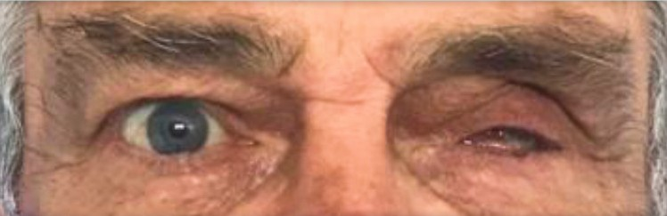

Un espacio donde la estética, la salud y la humanidad se encuentran para transformar vidas.

Aplicamos las últimas técnicas para lograr resultados naturales y armoniosos.

Acompañamos cada proceso con empatía, escucha y compromiso.

Combinamos lo artístico con lo tecnológico para una atención única.
"Volver a mirarme al espejo y sonreír sin miedo, fue el mejor regalo que me hicieron en RIE."
— Paciente de prótesis ocular

Se trabaja de forma integral
La salud bucal es siempre el primer paso. Sin salud, no es posible realizar tratamientos estéticos.
Logramos resultados estéticos de excelencia, naturales y armónicos, que transforman sonrisas y mejoran la calidad de vida.


Ortodoncista especializada en tratamientos avanzados
RIE es un centro dedicado a mejorar la calidad de vida de las personas mediante tratamientos estéticos y funcionales. Creemos en un abordaje integral, humano y personalizado.
Trayectoria
Desde un principio tuvo muy clara su vocación. En 1992 ingresó en la Facultad
de Odontología de la UDELAR, la cual disfrutó profundamente. Desde que se recibió y hasta el día de hoy,
nunca perdió el contacto con la misma.
En 1993 ingresó al taller de pintura de Fernando López Lage, pudiendo aunar de esta forma sus dos
pasiones: la odontología y el arte.
En cuanto al arte, realizó varias exposiciones, intervino en concursos, sacó el primer premio en el concurso del SMU, recibió varias menciones especiales y fue seleccionada para una Bienal en Buenos Aires.
En un momento, decidió dejar de crear en un solo plano y comenzar a crear en tres dimensiones. Trabajó con maniquíes, los pintaba y los exponía; otros los daba vuelta y con plastilina les creaba una nueva cara. Hasta que llegó un día clave en su carrera profesional. En una conferencia de la Dra. Isabel Jankielewicz sobre Prótesis Buco Maxilo Facial, se sintió totalmente identificada. Al finalizar, la Dra. Isabel dijo: “esta disciplina está basada en tres pilares: AMOR, ARTE Y CIENCIA”. Fue en aquel momento que descubrió que ese era su camino. Era la tercera dimensión que ella estaba buscando.
A partir de 2005 comenzó a ampliar conocimientos en el Servicio de Prótesis Buco Maxilo Facial de la Facultad de Odontología de la Universidad de la República, atendiendo pacientes mutilados faciales. Tarea que ha desarrollado ininterrumpidamente hasta hoy, con el mismo entusiasmo de siempre.
Nunca se detiene, tanto en Odontología tradicional como en Prótesis Buco Maxilo Facial, por lo que continuamente asiste a distintos cursos, jornadas y congresos.
Cursos, Jornadas, Congresos, Conferencias y Presentaciones
"Hoy, sigo haciendo lo que amo. Me gusta la transformación, la creación. En Odontología, más que nada en el área de Rehabilitación Estética, y en Prótesis Buco Maxilo Facial, especialmente en Prótesis Oculares. Es allí donde puedo volcar y desarrollar toda mi parte artística, sin nunca dejar de lado los otros dos pilares: la CIENCIA y el AMOR. Por esto y más, siempre estoy y estaré muy agradecida."
La Dra. Thelma Grunfeld es ortodoncista especializada en tratamientos avanzados, con una mirada estética, funcional y personalizada. Con años de experiencia y formación continua, trabaja con un enfoque integral que permite transformar sonrisas respetando la armonía facial.
Su trato cercano y compromiso con cada paciente hacen de ella una profesional destacada en el área de ortodoncia y estética dental.
Maica es la asistente técnica del equipo, apasionada por la atención personalizada y los detalles que marcan la diferencia. Su calidez humana y precisión profesional son clave para brindar una experiencia cómoda, eficiente y confiable en cada tratamiento.
Es parte esencial de RIE, acompañando a los pacientes en cada paso con dedicación y empatía.

Muchas personas que han sufrido la pérdida de un ojo desconocen que pueden mejorar su apariencia, confort y calidad de vida con el uso de una prótesis ocular.
Las causas pueden ser congénitas o adquiridas. Dentro de estas últimas se incluyen etiologías traumáticas, oncológicas, infecciosas u otras.
Cada prótesis es única
El primer paso es la toma de impresión de la cavidad ocular para definir la forma exacta de la prótesis



Paciente de prótesis ocular
Paciente de prótesis ocular
Paciente de prótesis ocular
Paciente de prótesis ocular